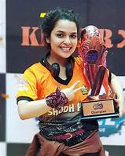

Chak De! India
Cast
Shah Rukh Khan
Vidya Malvade
Shilpa Shukla
Sagarika Ghatge

Chitrashi Rawat
Tanya Abrol
Report on Movie
This movie is based on hockey which is the national sport of India since 1928 and the present situation of this wonderful sport is not as honouring as it should be. Chak de India is a successful attempt to depict the sport in the most perfect manner, but remains the only one which has got such a wide coverage over its national sport. It is an attempt to revive the losing interest of the general masses towards the game. The story of the movie is inspired from the real life character of Mir Ranjan Negi depicting the hardships he faced while making the Indian Women Hockey team. In the patriarchal society that we live in, a team of all girls is taken to be a joke as this trend has been going on since the inception that 2 girls cannot be friends. Initially, the girls have a hard time getting along, but eventually possess the team spirit needed for them to play as a team. This movie has shown sisterhood in a positive light.
Chak De India is a sports film with engaging drama. It has been produced under the Yash Raj banner, the script and screenplay has been done by Jaideep Sahni and the execution has been done by Shimit Amin. The film stars Shahrukh as coach Kabir Khan, Vidya Malvade as Vidya Sharma the captain, Sagrika Ghatge, Chitrashi Rawat, Shilpa Shukla, Tanya Abrol, Anaitha Nair, Shubhi Mehta, Nisha Nair, Sandia Furtado, Arya Menon, Masochon, Kimi etc.
Kabir Khan (Shahrukh) is a former hockey player who was disgraced and discarded from the team during a World Cup Match against Pakistan after he misses a poignant deciding goal. Since then he has always been looked down upon and now after seven years he decides to redeem himself by taking on the mammoth task of making a winning team of the National Indian Women’s Hockey team. But taking on the task is only the beginning of his woes. The team has girls from different states of India and often this leads to differences amongst all of them, Kabir tries to break down these differences between the players and make them play as a team.
There’s ample of drama brought in with each of the girls having their own personal agenda and aim for being on the National Women’s Hockey team. Emotions run high during outbursts by the coach as well as his girls. Shimit captures the hockey matches well, the energy, the enthusiasm and the adrenaline rush is all there when one views the matches. The climax too does not disappoint despite being predictable. It has a feel good factor but nonetheless makes audiences feel triumphant after the victory.
Chak De India has a simple script, an engaging screenplay, the execution is skilled and the performances are natural. The film has a balanced dose of everything that makes it engaging and entertaining. But the film’s theme and subject may appeal more to a niche kind of audience and due to its realistic feel it may appear more as an intellectual choice. Nonetheless it is a good film that is definitely worth a watch.